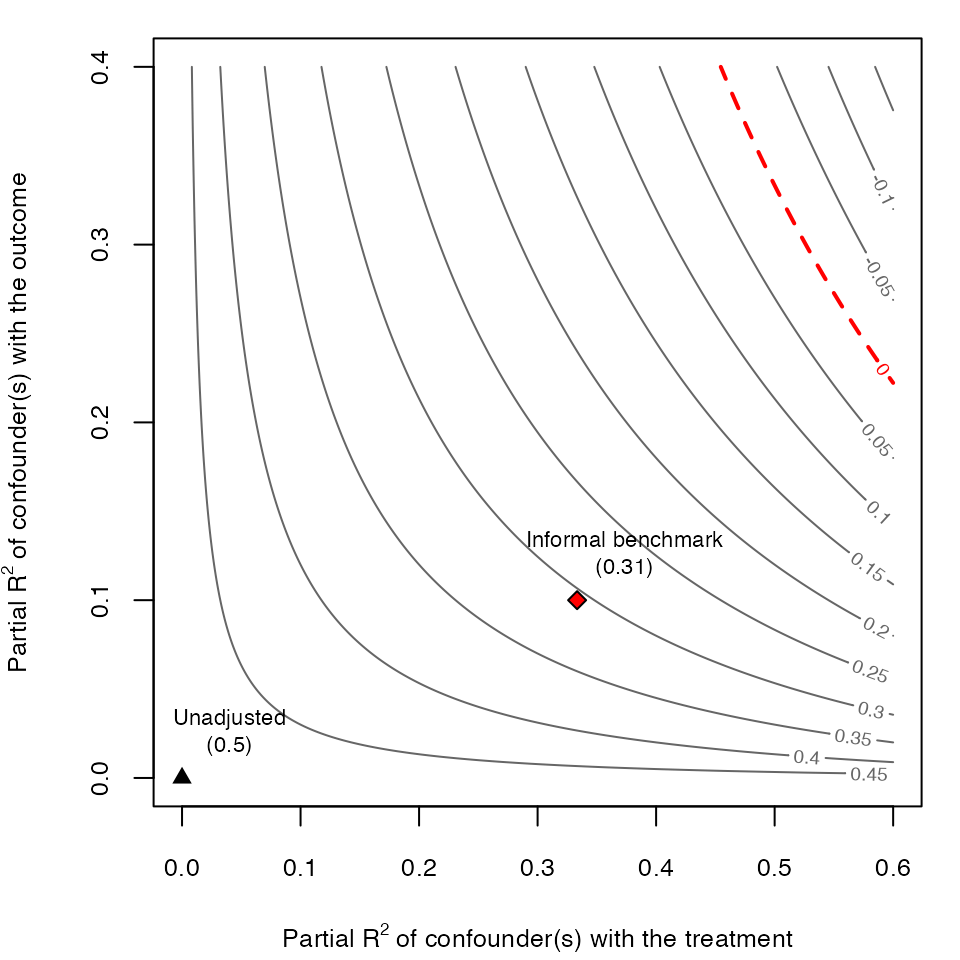

The Risks of Informal Benchmarking
Carlos Cinelli and Chad Hazlett
Source:vignettes/informal_benchmarking.Rmd
informal_benchmarking.RmdIntroduction
Informal “benchmarking” procedures have been widely suggested in the sensitivity analysis literature as a means to aid interpretation. It intends to describe how an unobserved confounder “not unlike” some observed covariate would alter the results of a study (e.g., Imbens, 2003; Blackwell, 2013; Hosman et al. 2010, Dorie et al., 2016, Hong et al. 2018). Cinelli and Hazlett (2020) show why these proposals may lead users to erroneous conclusions, and offer formal bounds on the bias that could be produced by unobserved confounding “as strong” as certain observed covariates.
To aid in understanding and appreciating the risk of informal
benchmarking procedures, this vignette replicates the example in Section
6.1 of Cinelli and Hazlett
(2020), in which such benchmarks produce clearly misleading results.
Replicating this example with sensemakr also provides a
useful tutorial on how users can construct their own sensitivity contour
plots with customized bounds, beyond what is offered by default on the
package.
Background
Prior work in sensitivity analysis—dating back at least to Imbens
(2003), and followed by others (e.g, Hosman et al. 2010, Dorie et al.,
2016, Hong et al. 2018)—has proposed comparing observables with
unobservables by informally using statistics of observed variables to
“calibrate intuitions” about sensitivity parameters concerning the
unobserved variable. This practice, however, can have undesirable
consequences, illustrated below. Section 4.4 of Cinelli and Hazlett (2020)
provides an alternative. This approach bounds the maximum strength of
confounding given relative judgments on how the strength unobserved
variables compares to the strength of observed variables. The
sensemakr package allows us to compute such bounds using
the function ovb_bounds(), which we demonstrate below.
Simulating the data
Let us begin by simulating the data generating process used in our example. Consider a treatment variable , an outcome variable , one observed confounder , and one unobserved confounder . Again, all disturbance variables are standardized mutually independent gaussians, and note that, in reality, the treatment has no causal effect on the outcome .
Also note that, in this model: (i) the unobserved confounder is independent of ; and, (ii) the unobserved confounder is exactly like in terms of its strength of association with the treatment and the outcome. The code below creates a sample of size 100 of this data generating process. We make sure to create residuals that are standardized and orthogonal so that all properties that we describe here will hold exactly even in this finite sample.
# loads sensemakr package
library(sensemakr)
#> See details in:
#> Carlos Cinelli and Chad Hazlett (2020). Making Sense of Sensitivity: Extending Omitted Variable Bias. Journal of the Royal Statistical Society, Series B (Statistical Methodology).
# simulates data
n <- 100
X <- scale(rnorm(n))
Z <- resid_maker(n, X)
D <- X + Z + resid_maker(n, cbind(X, Z))
Y <- X + Z + resid_maker(n, cbind(X, Z, D))Fitting the model
In this example, the investigator does not observe the confounder . Therefore, she is forced to fit the restricted linear model , resulting in the following estimated values
model.ydx <- lm(Y ~ D + X)
summary(model.ydx)
#>
#> Call:
#> lm(formula = Y ~ D + X)
#>
#> Residuals:
#> Min 1Q Median 3Q Max
#> -3.3274 -0.8791 -0.0560 0.9912 2.5199
#>
#> Coefficients:
#> Estimate Std. Error t value Pr(>|t|)
#> (Intercept) -1.554e-16 1.237e-01 0.000 1.00000
#> D 5.000e-01 8.793e-02 5.686 1.37e-07 ***
#> X 5.000e-01 1.523e-01 3.283 0.00143 **
#> ---
#> Signif. codes: 0 '***' 0.001 '**' 0.01 '*' 0.05 '.' 0.1 ' ' 1
#>
#> Residual standard error: 1.237 on 97 degrees of freedom
#> Multiple R-squared: 0.5, Adjusted R-squared: 0.4897
#> F-statistic: 48.5 on 2 and 97 DF, p-value: 2.512e-15Note we obtain a large and statistically significant coefficient estimate of the effect of on (). However, we know that the variable is not observed, and there is the fear that this estimated effect is in fact due to the bias caused by . On the other hand, let us suppose the investigator correctly knows that: (i) and have the same strength of association with and ; and, (ii) is independent of . Can we leverage this information to understand how much bias a confounder “not unlike” could cause?
Informal benchmarks
Computing the bias due to the omission of requires two sensitivity parameters: its partial with the treatment and its partial with the outcome . How could we go about computing the bias that a confounder “not unlike ” would cause?
Intuitively, it seems that we could take as reference the observed
partial
of
with
and
,
and use those as the plausible values for the sensitivity parameters.
That’s the essence of many informal benchmarking proposals. So let us
now compute those observed partial
using the partial_r2() function of sensemakr.
For the partial
of
with the treatment, we also need to fit a treatment regression
first.
# fits treatment regression
model.dx <- lm(D ~ X)
# computes observed partial R2 of X
r2yx.d <- partial_r2(model.ydx, covariates = "X")
r2dx <- partial_r2(model.dx, covariates = "X")Once both partial
are computed, we can determine the implied adjusted estimate due to an
unobserved confounder
using the adjusted_estimate() function.
informal_adjusted_estimate <- adjusted_estimate(model.ydx,
treatment = "D",
r2dz.x = r2dx,
r2yz.dx = r2yx.d)We can now plot the sensitivity contours with
ovb_contour_plot() and add our informal benchmark with the
numeric method of add_bound_to_contour(). The arguments
label.bump.x and label.bump.y of these
functions allow adjusting the position of the bound label in the
plot.
# draws sensitivity contours
ovb_contour_plot(model.ydx,
treatment = "D",
lim = .6)
# adds informal benchmark
add_bound_to_contour(r2dz.x = r2dx,
r2yz.dx = r2yx.d,
bound_value = informal_adjusted_estimate,
bound_label = "Informal benchmark")
As we can see, the results of the informal benchmark are different from what we expected. The informal benchmark point is still far away from zero, and this would lead an investigator to incorrectly conclude that an unobserved confounder “not unlike ” is not sufficient to explain away the observed effect. Moreover, this incorrect conclusion occurs despite correctly assuming that: (i) and have the same strength of association with and ; and, (ii) is independent of . Why does this happen?
As explained in Section 6.1 of Cinelli and Hazlett (2020), there are two problems affecting informal benchmarks in this setting. First, we have to make an adjustment of baseline variance to be explained, since the sensitivity parameters consider the partial of with the outcome, after taking into account what is already explained by . Second, consider the DAG of our structural model:

That is, although is marginally independent of , note that is not conditionally independent of , given , because is a collider (Pearl, 2009). This distorts the observed quantities of that are being used for benchmarking.
Formal bounds
Given the above considerations, we do not recommend using informal
benchmarks for sensitivity analysis. We now show how to compute formal
bounds. In sensemakr, you can use the function
ovb_bounds().
# compute formal bounds
formal_bound <- ovb_bounds(model = model.ydx,
treatment = "D",
benchmark_covariates = "X",
kd = 1, ky = 1)In this function you specify the linear model being used
(model.ydx), the treatment of interest
(),
the observed variable used for benchmarking
(),
and how stronger
is in explaining treatment (kd) and outcome
(ky) variation, as compared to the benchmark variable
.
We can now plot the proper bound against the informal benchmark.
# contour plot
ovb_contour_plot(model.ydx,
treatment = "D",
lim = .6)
add_bound_to_contour(r2dz.x = r2dx,
r2yz.dx = r2yx.d,
bound_value = informal_adjusted_estimate,
bound_label = "Informal benchmark")
add_bound_to_contour(bounds = formal_bound,
bound_label = "Proper bound")Note that, using the formal bounds, the researcher now reaches the correct conclusion that, an unobserved confounder similar to is strong enough to explain away all the observed association. For further details, please see Sections 4.4 and 6.1 of Cinelli and Hazlett (2020).
References
Cinelli, C. Hazlett, C. (2020) “Making Sense of Sensitivity: Extending Omitted Variable Bias”. Journal of the Royal Statistical Society, Series B (Statistical Methodology). ( link )